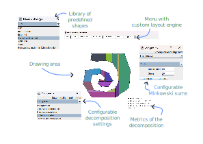

The goal of the project is to explore different algorithms for decomposing a simple polygon into convex subcomponents. For this project five different algorithms are attempted. For this, multiple strategies are examined. The first strategy is of not adding any extra points (called Steiner points). The algorithms that are attempted with this are simple triangulation and greedy decomposition. The second strategy is to allow adding adding extra points to ease the decomposition. For this, the Chazelle algorithm, slab decomposition and KD decomposition are going to be implemented.
To better be able to compare the performance of the different algorithms, a Minkovski sums algorithm will be implemented where its first step is to decompose the polygons on which the sum will be calculated. Reducing the amount of decomposition components will here result generally in better performance.
Here now follows a more thorough description of the different components of the application and its implemented algorithms.
Our implementation of triangulation is based on the line sweep algorithms seen in the course. The first part is to split a simple polygon into multiple Y-monotone polygons by adding carefully chosen edges. The doubly connected edge list structure has been implemented to easily add edges and provide efficient way to represent the newly created polygons. At the end of the first part, the border of each face in the DCEL is a y-monotone polygon. Here is an example of result of our application at this stage:

Then the second part is spliting these polygons into triangles by using another line sweep algorithm with a stack. The result for the same polygon looks like this:

This decomposition uses the triangulation algorithm but stop as soon as there is no more reflex vertex in the polygon. To be done.
The slab decomposition algorithm is described in
The way this algorithm is implemented is by taking a polygon, categorizing all vertices of this simple polygon into the following categories: start, end, split, join, reflex point and other points. This information is then used in a sweep line algorithm that travels perpendicular to the initial direction over the field with the vertices as its events. This is done to maintain a list of edges above and below a certain point, so only a limited amount of edges need to be tested for intersection. Once an edge above/below a reflex point has been found, a cut will be made along the initially chosen direction.
For this algorithm, all events are used to update the sweep line structure, and maintain an ordered list of all edges currently intersecting with the sweep line. The vertices considered reflex points are the vertices that are classified as either a split, a join or a reflex point.
For a time complexity analysis, categorizing all points and adding them to an event queue results in O(n log n). As we need to iterate through all points and then put them into a priority queue. Insertion of a cut is O(E) with E the number of edges of the part of the polygon that has not been cut. The final time complexity of this algorithm is then O(E n + p) with E the number of edges in the polygon and n the number of events that represent reflex points and p the number of events that do not represent reflex points.
The KD decomposition is described in
For the KD decomposition algorithm, this results in first finding all reflex points in the polygon and sorting them along the x- and y-axis. Every iteration, the median of the sorted reflex points is selected along the current axis. The polygon is then cut along this axis through the median point. The resulting pieces after the cut are then handled recursively until no more reflex points can be found while alternating the selected axis.
A invariant that needs to be taken into account, is that once a reflex point has been used for a cut, it is not reused for a cut along another axis.
For the time complexity analysis of this algorithm: Finding all the reflex points is O(n) and sorting them along all the axis's is O(n log(n)). For the meat of the algorithm, first finding the median along an axis region is O(1) ((start + end) / 2). Finding one or possibly two opposite sides for making a cut, is done by iterating all edges of the faces adjacent to the current reflex point. If an edge is intersecting with the direction of the cut, is visible from inside the polygon by the current reflex point and is the closest intersection seen from the current reflex point, a cut is made from the current reflex point to the intersection with the line along the current axis through the current reflex point and the found edge. This cut can be made in O(E) with E the number of edges in the common face between the reflex point and the cut's destination. Finding the cut's destination is O(FE) with F the adjacent faces to the reflex point and E the number of edges in these adjacent faces. As it is not guaranteed that the cut evenly divides every time the polygon, resulting in having to search faces that do not really reduce in size with every cut. This leads to a worst case time complexity of n*O(n)=O(n^2). But when considering more favorable polygons where cutting, splits a face into 2 more equal parts, it can be said that the amortized time becomes O(n log n).

To be done.
The GUI is made with Processing in Java for the drawing and interactive part and uses Swing for all other menus. It contains a custom layout engine to position dynamically the buttons in the menu and displays metrics about a certain decomposition.
For easy testing and experimenting, it is possible to save and reopen a polygon. Saving is done by storing the points of the polygon into a custom file format. Doing this allows to experiment with different types of polygons in an automated testing bed.
| Decomposition | #vertices (before) | #vertices (decomposition) | #faces (decomposition) | #edges (decomposition) |
|---|---|---|---|---|
| Triangle | 30 | 30 | 18 | 114 |
| Greedy | 30 | 30 | 28 | 114 |
| Slab | 30 | 45 | 16 | 120 |
| KD | 30 | 46 | 17 | 124 |
| Decomposition | #vertices (before) | #vertices (decomposition) | #faces (decomposition) | #edges (decomposition) |
|---|---|---|---|---|
| Triangle | 10 | 10 | 8 | 34 |
| Greedy | 10 | 10 | 7 | 32 |
| Slab | 10 | 15 | 6 | 40 |
| KD | 10 | 14 | 5 | 36 |
| Decomposition | #vertices | #vertices (decomposition) | #faces (decomposition) | #edges (decomposition) |
|---|---|---|---|---|
| Triangle | 18 | 18 | 16 | 66 |
| Greedy | 18 | 18 | 16 | 66 |
| Slab | 18 | 28 | 11 | 76 |
| KD | 18 | 29 | 12 | 80 |